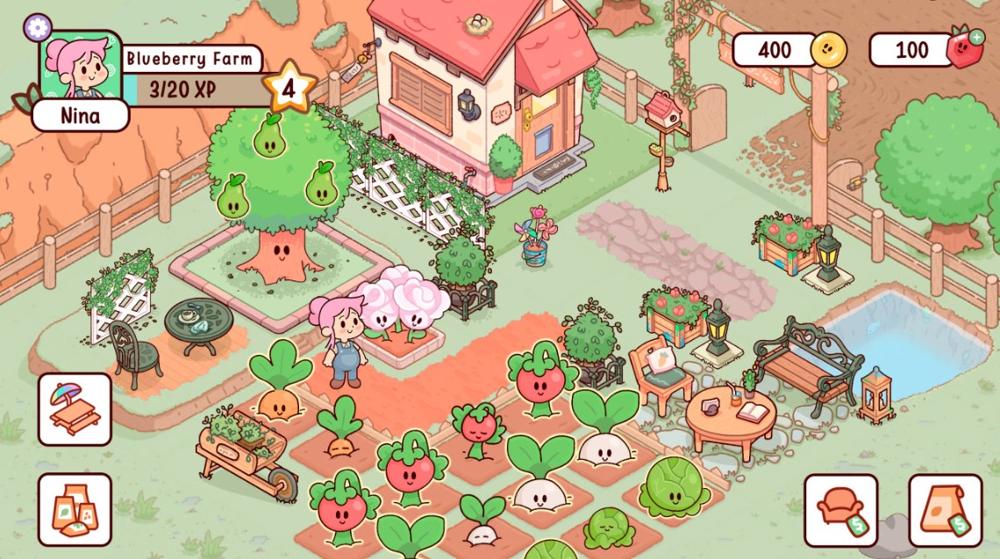

Here are some screenshots of the game:

My Dear Farm is game where you can grow plant and trees. This game also have cute characters that you can name yourself with. If the plants and trees are fully grown, you can actually harvest them and get 1 coin per plant and 2 coins per trees. You can receive rewards by simply checking in. The rewards vary differently, you can get diamonds, house appliances, new plants, or new house designs.
Copyright © Aleah Mae G. Oronos 9-Lithium. All right reserved.